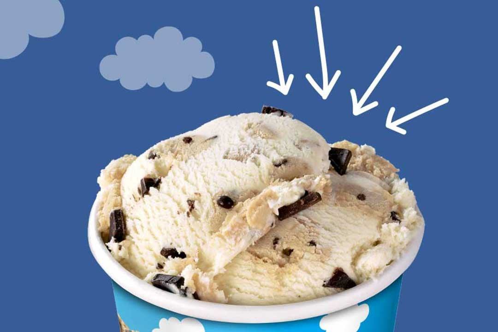
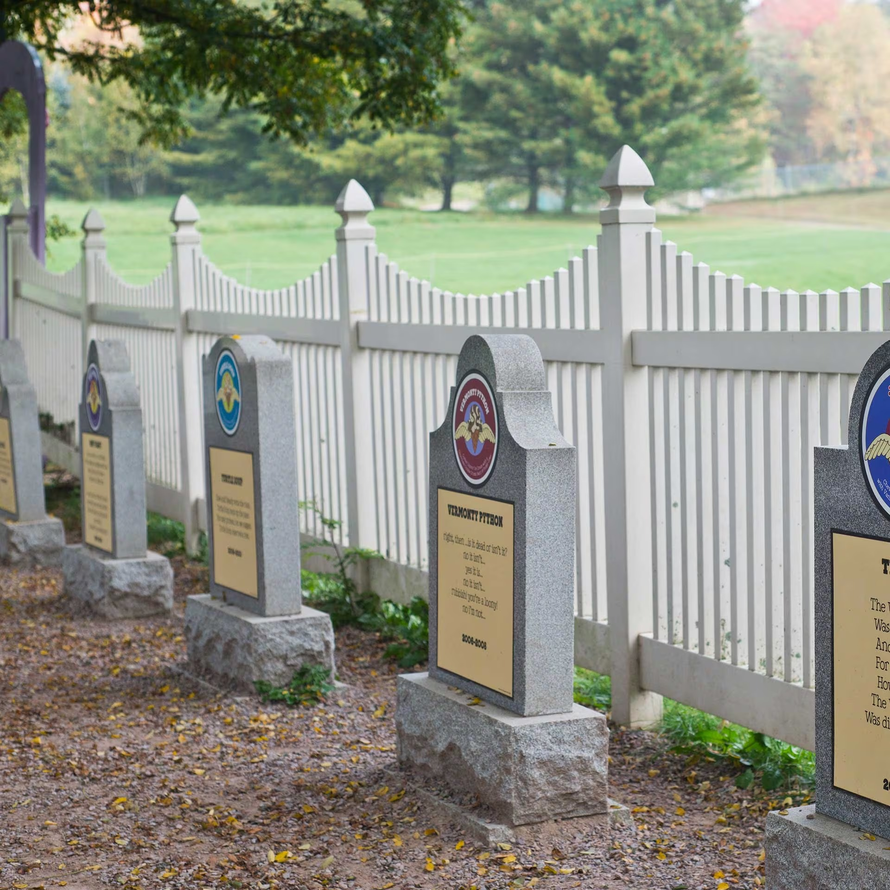
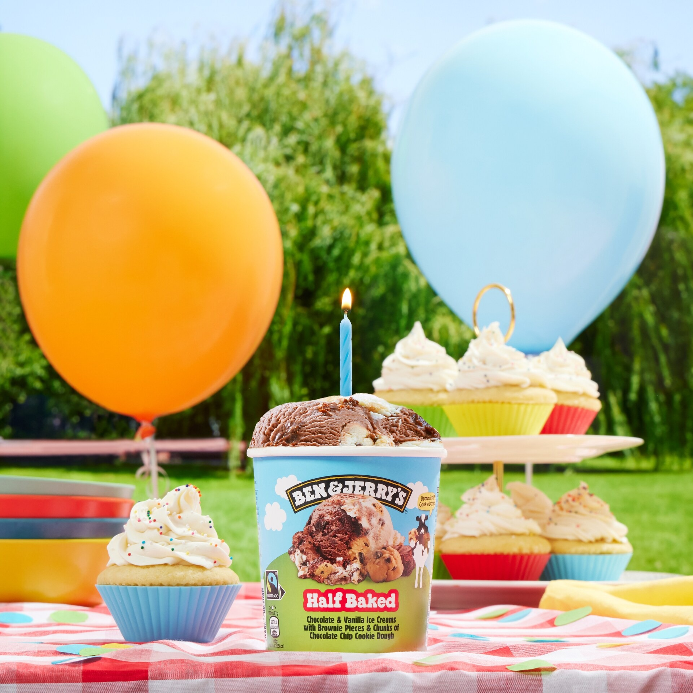

Bohemian Raspberry
Laat je smaakpapillen rocken met de terugkeer van de zoete eerbetoon aan Queen.
Lees meerVerkooppunten
Verkooppunten
Vind jouw dichtstbijzijnde supermarkt of bestel Ben & Jerry’s online.
Vind nu!Doe mee
Wij zetten ons in voor onderwerpen die ons nauw aan het hart liggen. Ontdek hoe jij meehelpt.
Ontdek meer over onze waardenTopverhalen
-

11 november 2025
The Flavour Graveyard
Honouring our dearly de-pinted flavours...
Meer lezen -

17 oktober 2025
QUIZ: Celebrate Our Birthday
Test je kennis met 10 vragen...
Meer lezen -
1 mei 2025
Spectacu-Love Cheesecake
Sinterklaas is alweer in het land, met dit...
Meer lezen